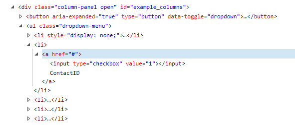

Texto al que se le supondra una imagen con propiedades float left
Texto al que se le supondra una imagen con propiedades float right
Este cuadro-texto representa un clear de ambos float en donde la imagen no supondra por ningun lado por lo que seguira su orden segun el html, como se aprecia en la imagen anterior